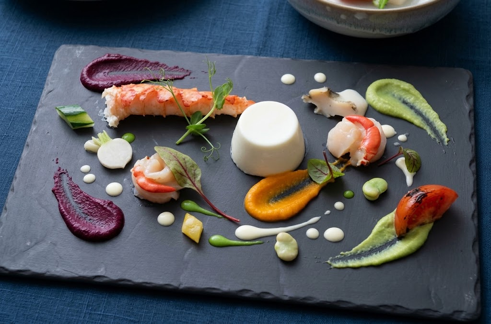
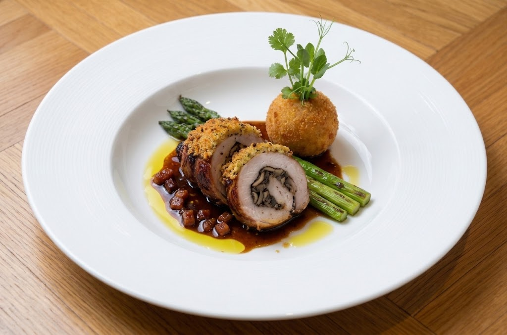
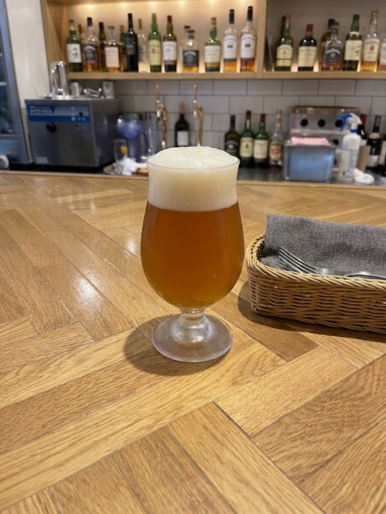
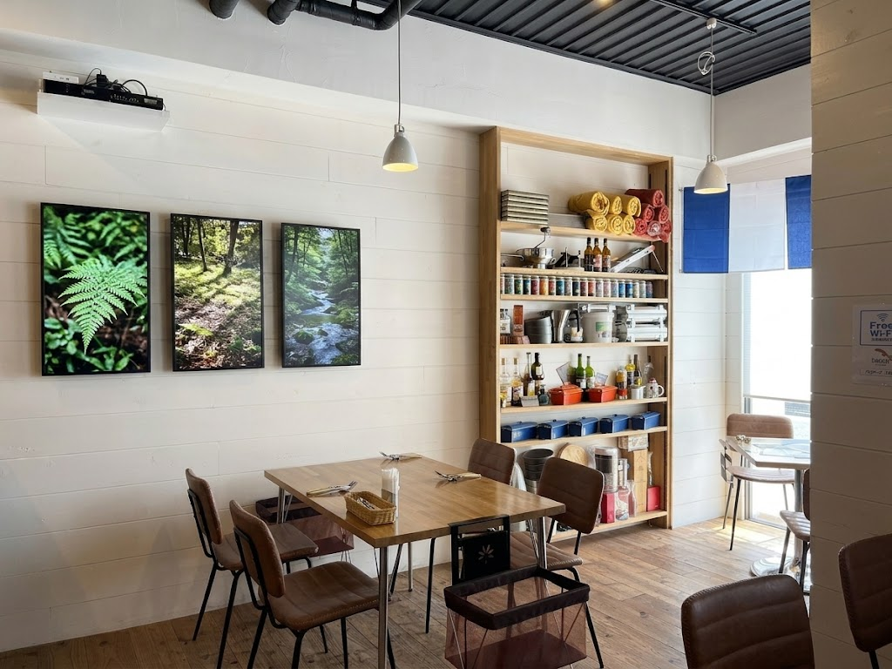

地酒専門の酒店を37年営んできた神崎良一が、2022年に一ノ関駅前で開いたビストロです。26年にわたり「全国地ビールフェスティバルin一関」を牽引し、全国のクラフトビールが約3万人の来場者を集めるイベントに育てました。
新型コロナで祭りの灯が消えかけたとき、地元出身の柴田亮シェフと出会い、「料理とビールを一年中楽しめる場所を」とリコルトを立ち上げました。

季節感と鮮度にこだわった素材を、確かな技術で一皿に。伝統的なフレンチにコンテンポラリーなエッセンスを加え、五感を刺激する料理に仕上げます。
日本各地の地ビールを季節ごとに厳選して常時提供。ワインも10種類以上そろえ、料理とのペアリングをご提案します。
デートにも仲間との時間にも、気負わず使えるリーズナブルな価格帯。一ノ関駅からすぐ、デザートはテイクアウトもできます。

地ビールイベントに長く携わってきた一関出身の酒店店主が、ビールの楽しみ方まで案内します。
リコルトマリアージュ
柴田シェフ考案の特製ソーセージに合わせた、地元クラフトビール。店を代表する組み合わせです。

カウンターでもテーブルでも、ひとりでも二人でも。シェフの料理を、ビール片手に気軽に楽しめる空間です。
2022年に初めてお伺いしてから今回で８回目。一ノ関には何もご縁が無かったのですが、今ではこのレストランでご飯を頂くために東京から伺っています。柴田さんのお料理は毎回新しい発見があります。私にとって長野飯田市のフレールとこちらは、とても大切なフランス料理の名店。とても美味しい。
地ビールとかワインとか飲み物は色々あります。夜、お魚のオススメ、チーズの盛り合わせ、ワイン🍷を頂きました、カウンターでしたが一緒に行った友人と共にとても良くして頂きました✨
これから、リコルトの楽しみ方を広げていきます。
準備中です。リコルトの味を、ご自宅にも。
3ブランドをセレクトし、少量ずつ飲み比べ。選ぶ楽しさから始められます。
お料理とビールの相性をまとめたペアリングカードつきで、ご自宅でも楽しめる企画を検討中です。